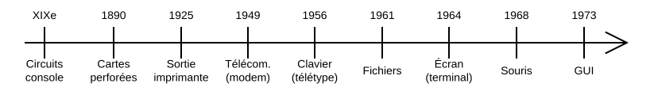

XIXe siècle : circuit électronique, qui pour une entrée donnée produit une sortie.
- Entrée : interrupteurs
- Sortie : lampes
Éventuellement, les entrées-sorties sont regroupées sur un poste de contrôle appelé
"panneau de commande", "pupitre de commande", ou "console de commande".
"panneau de commande", "pupitre de commande", ou "console de commande".
1890 : les cartes perforées remplacent les éléments d'entrées-sorties.
- stocke les entrées (données et/ou instructions).
- permet de les rejouer, les transporter, et les archiver.
1925 : sortie imprimante.
- conserve les résultats sans avoir à les retranscrire.
1943 : modem, échange de données via les lignes téléphoniques.
- très lent (1 300 bit/s).
1956 : télétypes avec clavier alpha-numérique.
- saisie des instructions (commandes) directement sur l'ordinateur.
- les résultats sont imprimés.
Invite de commande (prompt) : indique qu'une nouvelle commande peut être saisie (ici ).
Ligne de commande : instruction (imprimée sur la même ligne que l'invite).
- On parle alors d'interface en ligne de commande (CLI - Command Line Interface).
Les ordinateurs gagnent progressivement en capacité de stockage interne :
- bandes magnétiques en 1951.
- disques durs en 1956.
1961 : systèmes de fichiers.
- Fichier exécutable : fichier contenant des instructions qu'on peut éditer (sans écrans) et exécuter.
Les cartes perforées demeurent toutefois pertinentes pour la saisie d'entrées complexes et/ou répétées.
- utilisées jusqu'en 1980-1990.
- progressivement remplacées par des supports de stockage amovibles plus performants.
1964 : terminaux avec écrans textuels.
- l'écran remplace les imprimantes pour la visualisation.
- le terminal permet à un utilisateur de se connecter à l'ordinateur (mainframe), qui continue de disposer d'une console pour son administration.
TUI (Text-based/Terminal User Interface) :
- on peut dessiner sur un écran entier.
- plus ergonomique : formulaires, panneau de commande virtuel.
1968 : la souris permet de naviguer en cliquant sur les éléments de l'écran, au lieu d'utiliser les touches du clavier (tabulation, flèches).

Les lignes de commandes (CLI) conservent toutefois de nombreux avantages :
- automatisation : les enregistrer dans un fichier (script) pour les "rejouer" à tout moment.
- toute la puissance d'un langage de programmation (variables, conditions, boucles, etc).
1973 : interfaces graphiques modernes (GUI - Graphical User Interface).
- Gestionnaire de fenêtres : les fenêtres sont dessinées pixels par pixels, et manipulées à la souris.
- Émulateurs de terminal : simule un terminal au sein d'une fenêtre graphique.
1982 : session graphique à distance.
- nécessite un débit élevé (jusqu'à 10 Mbit/s), ainsi qu'une faible latence => ADSL2+ (~2004).
- même aujourd'hui, l'accès à distance est principalement textuelle (CLI/TUI).
De nombreux ordinateurs ne disposent pas d'une GUI (e.g. serveurs, embarqués) afin de :
- réduire les surfaces d'attaques.
- économiser les ressources (calculs, réseau, etc.).
Le Shell (1971) est à la fois :
- le langage dans lequel on écrit les lignes de commandes.
- l'interpréteur qui lit et exécute les lignes de commandes.
Le Terminal sert alors d'interface graphique entre l'utilisateur et le Shell, il permet :
- d'écrire les lignes de commandes envoyées au Shell
- d'en visualiser les résultats retournés par le Shell.

Ligne de commande : ligne de texte représentant une instruction à exécuter, e.g. :
En Shell, une ligne de commande commence par une commande représentant l'instruction à exécuter, e.g. :
- : copy, copier un fichier.
- : move, déplacer un fichier.
- : remove, supprimer un fichier.
- : créer un fichier.
- : make directory.
- : rechercher un fichier.
La commande est potentiellement suivie d'un ou de plusieurs arguments, le tout séparé par des espaces :
Les arguments (appel) sont les valeurs qu'on transmets aux paramètres (définition).
Si un argument contient un espace, il doit être échappé (ou placé entre guillemets simples) :
Signature : décrit l'usage d'une commande.
- : supprimer (remove).
- : copier (copy).
- : déplacer (move).
Options : modifie le comportement des commandes:
- : si dossier (recursive).
- dossier où placer (target).
- nouv. chemin de (not target).
- recopier la signature de la commande.
- remplacer les encadrés.
| Syntaxe | Signification | Exemple |
|---|---|---|
| une valeur (à remplacer). | ||
| valeur facultative. | / | |
| l'un ou l'autre. | / | |
| un ou plusieurs arguments. | ||
| idem, mais séparés par . |
...
La manière d'accéder à la documentation d'une commande dépend de sa nature (cf ) :
- si (commande "normale") :
- si / (interne au Shell) : .
La commande est une version simplifiée de et de .
Nous fournissons une cheat sheet donnant l'usage simplifié des commandes que nous utiliserons.
Le Shell interprète certaines touches :
- / : modifier une ligne de commande en cours d'écriture.
- / : parcourir l'historique des commandes exécutées (e.g. pour les modifier puis ré-exécuter).
- (tabulation) : auto-complétion des commandes et des chemins.
- : afficher les possibilités d'auto-complétion.
Afin d'éviter les erreurs de saisies, il est très vivement encouragé d'utiliser l'auto-complétion du shell.
Catalogue de fichiers [1961] : regroupe un ensemble de fichiers.
- Besoin de sélectionner un catalogue pour accéder au contenu.
- Fichiers identifiés par leur nom au sein du catalogue courant.
- Pas suffisant pour organiser un nombre important de fichiers.
Répertoire (directory) [1965] : peut contenir d'autres répertoires.
- Fichiers identifiés par leur nom au sein du répertoire de travail.
- Répertoire de travail (working directory) :
- répertoire courant/sélectionné, "dans lequel on est".
- Répertoire personnel (home directory) :
- possédé par chaque utilisateur.
Les répertoires (directory) sont aussi appelés dossiers (folder) :
- Répertoire : terme technique consacré.
- Dossier : appellation courante (dans interfaces graphiques, et auprès grand publique).
Dossier racine (root directory) : noté , contient l'ensemble des fichiers (directement ou indirectement) :
Les commandes :
- (list) affiche le contenu du dossier (par défaut, du répertoire de travail).
- (change directory) aller dans le dossier (par défaut, répertoire personnel).
: dossier parent du répertoire courant.
: affiche l'arborescence du dossier (option spécifique à la version utilisée).
Savoir où on se trouve pour exécuter les commandes sur le bon ordinateur et dans le bon dossier :
- : utilisateur.
- : nom de l'ordinateur.
- (print working directory).
- L'invite de commande affiche ces informations avant chaque saisie de commande :
demigda@Latitude:~$ - utilisateur : ;
- ordinateur : ;
- répertoire de travail : .
("at" en anglais) indique un lieu. E.g. : "le compte du serveur ".
: répertoire personnel de l'utilisateur (par défaut, utilisateur courant).
> ls 📂User1 📂User2 > cd User1 > ls 📂faa 📄foo >
user@host:/$ ls 📂User1 📂User2 user@host:/$ cd User1 user@host:/User1$ ls 📂faa 📄foo user@host:/User1$
Chemin (path) : "route" à emprunter pour atteindre un fichier.
- Chemin relatif : part du répertoire de travail (noté ).
user@host:/tmp$ ls ./foo/faa
- Chemin absolu : part de la racine (noté ).
user@host:/tmp$ ls /tmp/foo/faa
📂 /
└── 📂 tmp
└── 📂 foo
├── 📄 faa
├── 📂 fee
└── 📄 fuu
Écrivez les chemins identifiant les fichiers suivants :
📂 /
└── 📂 tmp
└── 📂 foo
├── 📄 faa
├── 📂 fee
└── 📄 fuu
Par convention, lorsque le chemin désigne un dossier, on le suffixera par , e.g. .
Caractères de remplacements (wildcard), dans un chemin, représentent :
- : 0 à plusieurs caractères, e.g. : les fichiers d'extension ".txt".
- : 0 à plusieurs dossiers, e.g. : les fichiers "foo.txt" dans un des sous dossiers.
- : une alternative, e.g. : "foo.txt" ou "faa.txt".
Avant d'exécuter la ligne de commande, le Shell la réécrit en interprétant les caractères spéciaux (e.g. , ).
Échapper (ou placer entre guillemets) un caractère empêche son interprétation par le Shell.
E.g. où sera interprété par la commande (au lieu du Shell).
E.g. où sera interprété par la commande (au lieu du Shell).
Nous fournissons affichant la ligne de commande finale, sans l'exécuter :
Le terminal se comporte comme une imprimante :
- reçoit un flux séquentiel de caractères, qu'il "imprime" l'un après l'autre.
- mais n'affiche que les dernières lignes à l'écran.
- permet de défiler (scroll) à l'écran l'ensemble des lignes "imprimées".
Caractères de contrôle : caractères non-imprimables transmis dans le même flux que les caractères à "imprimer", e.g. :
Séquences de contrôle : série de caractères commençant par (aussi noté ).
- , newline.
- , tabulation.
- , backspace.
- , alert.
- ou , escape.
Séquences de contrôle : série de caractères commençant par (aussi noté ).
- pour des opérations plus spécifiques, e.g. changer la couleur du texte, déplacer le curseur, etc.
C'est ainsi que certaines commandes Shell contrôlent le terminal, comme :
- : efface l'écran.
- : réinitialise le terminal.
: quitte le Shell actuel. Le terminal graphique associé est généralement fermé.
Elle n'envoie pas de séquence de contrôle.
Elle n'envoie pas de séquence de contrôle.
Le terminal converti les événements clavier en un flux séquentiel de caractères.
- lu par la commande en cours d'exécution, sinon par le Shell.
- peut contenir des caractères de contrôle (et séquences de contrôle).
Le terminal interprète certains raccourcis claviers sans les envoyer au flux (usuellement préfixés par ) :
- , copier
- , coller
Attention à ne pas oublier la touche majuscule pour la copie.
En effet, met fin à la commande en cours d'exécution.
En effet, met fin à la commande en cours d'exécution.
Sous Linux, vous pouvez aussi coller un texte sélectionné via le clic-milieu ou clic-molette de la souris.
Des commandes Shell lancent des applications TUI dans le terminal, e.g. lance un éditeur de texte :

Raccourcis claviers indiqués en bas de la fenêtre.
Raccourcis claviers indiqués en bas de la fenêtre.
Lorsqu'une commande s'exécute, elle "prend" le contrôle du terminal (clavier et écran).
- elle ne "rend" le contrôle qu'une fois son exécution terminée.
- on revient alors au Shell, permettant d'entrer de nouvelles commandes.
Les TUI sont plus ergonomiques, mais moins "standard".
Afin de faciliter votre apprentissage, nous proposerons des alternatives TUI lorsque possible.
Afin de faciliter votre apprentissage, nous proposerons des alternatives TUI lorsque possible.
Le Shell et les commandes écrivent dans un tampon (buffer), affiché ensuite à l'écran par le terminal.
En réalité, il dispose de 2 buffers (≈ 2 imprimantes, dont une seule est affichée à l'écran) :
- le buffer principal : pour les commandes CLI.
- le buffer alternatif : pour les commandes TUI.


Lorsqu'on quitte l'application TUI, on retrouve ainsi l'écran tel qu'il était avant son lancement.